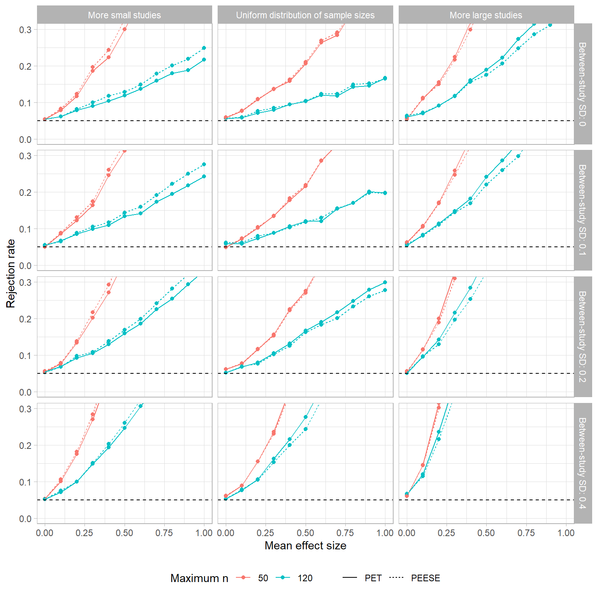
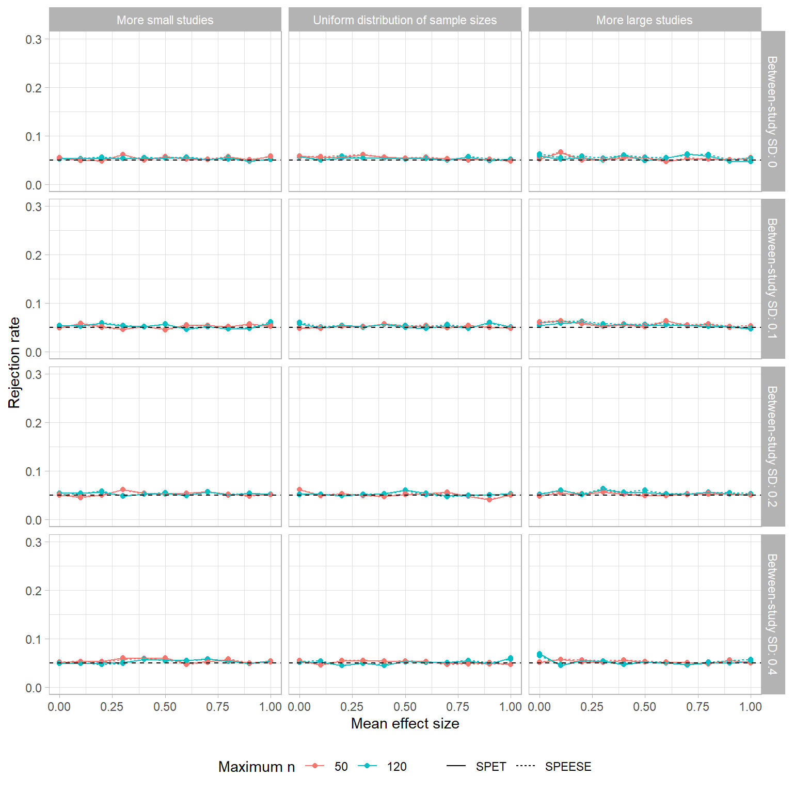
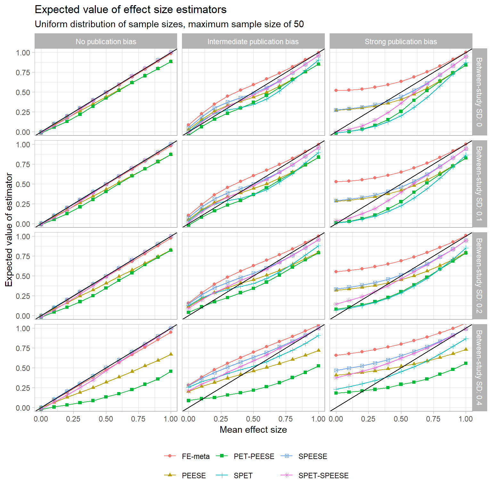
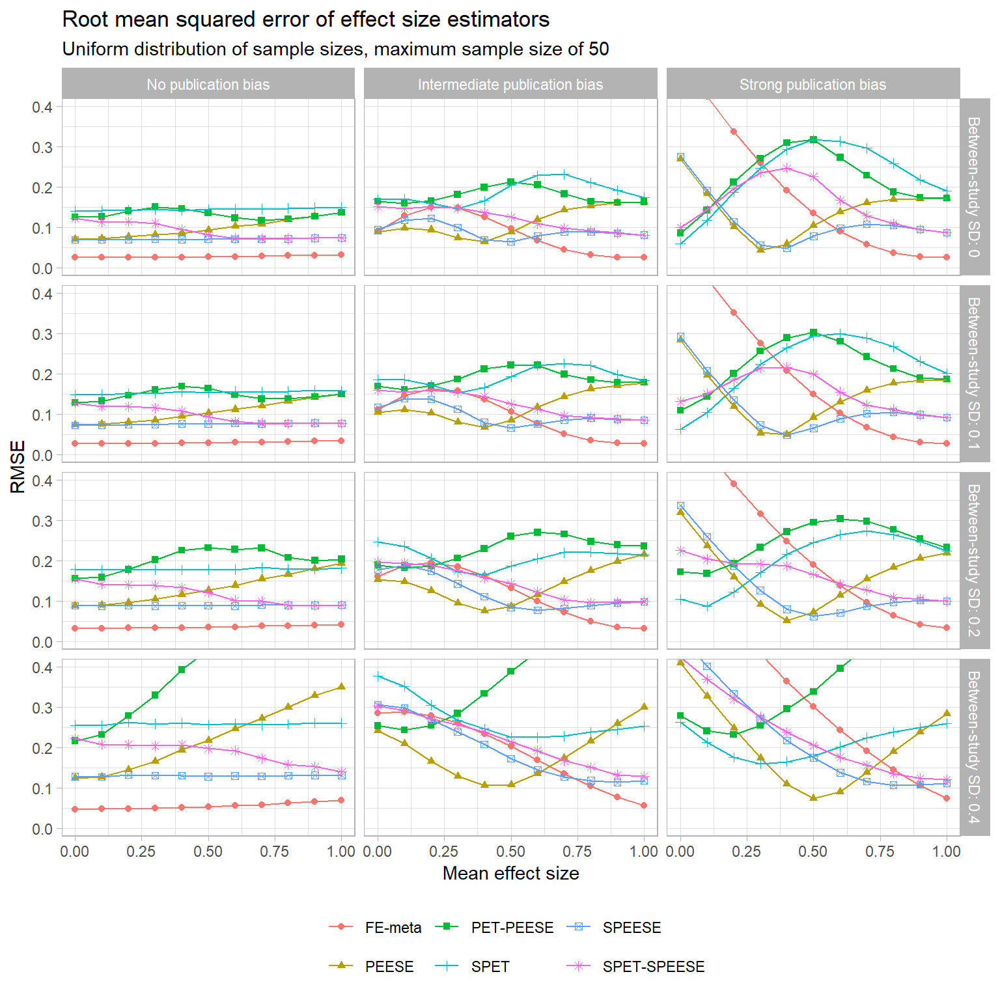

Publication bias—or more generally, outcome reporting bias or dissemination bias—is recognized as a critical threat to the validity of findings from research syntheses. In the areas with which I am most familiar (education and psychology), it has become more or less a requirement for research synthesis projects to conduct analyses to detect the presence of systematic outcome reporting biases. Some analyses go further by trying correct for its distorting effects on average effect size estimates. Widely known analytic techniques for doing so include Begg and Mazumdar’s rank-correlation test, the Trim-and-Fill technique proposed by Duval and Tweedie, and Egger regression (in its many variants). Another class of methods involves selection models (or weight function models), as proposed by Hedges and Vevea, Vevea and Woods, and others. As far as I can tell, selection models are well known among methodologists but very seldom applied due to their complexity and lack of ready-to-use software (though an R package has recently become available). More recent proposals include the PET-PEESE technique introduced by Stanley and Doucouliagos; Simonsohn, Nelson, and Simmon’s p-curve technique; Van Assen, Van Aert, and Wichert’s p-uniform, and others. The list of techniques grows by the day.
Among these methods, Egger regression, PET, and PEESE are superficially quite appealing due to their simplicity. These methods each involve estimating a fairly simple meta-regression model, using as the covariate the sampling variance of the effect size or some transformation thereof. PET uses the standard error of the effect size as the regressor; PEESE uses the sampling variance (i.e., the squared standard error); PET-PEESE involves first testing whether the PET estimate is statistically significant, using PEESE if it is or PET otherwise. The intercept from one of these regressions is the average effect size estimate from a study with zero sampling variance; the estimated intercept is used as a “bias-corrected” estimator of the population average effect. These methods are also appealing due to their extensibility. Because they are just meta-regressions, it is comparatively easy to extend them to meta-regression models that control for further covariates, to use robust variance estimation to account for dependencies among effect size estimates, etc.
In a recent blog post, Uri Simonsohn reports some simulation evidence indicating that the PET-PEESE estimator can have large biases under certain conditions, even in the absence of publication bias. The simulations are based on standardized mean differences from two-group experiments and involve simulating collections of studies that include many with small sample sizes, as might be found in certain areas of psychology. On the basis of these performance assessments, he argues that this purported cure is actually worse than the disease—that PET-PEESE should not be used in meta-analyses of psychological research because it performs too poorly to be trusted. In a response to Uri’s post, Joe Hilgard suggests that some simple modifications to the method can improve its performance. Specifically, Joe suggests using a function of sample size as the covariate (in place of the standard error or sampling variance of \(d\)), and also using PET or PEESE as stand-alone estimators, rather than using them contingent on a significance test.
In this post, I follow up Joe’s suggestions while replicating and expanding upon Uri’s simulations, to try and provide a fuller picture of the relative performance of these estimators. In brief, the simulations show that:
- Tests for small-sample bias that use PET or PEESE can have wildly incorrect type-I error rates in the absence of publication bias. Don’t use them.
- The sample-size variants of PET and PEESE do maintain the correct type-I error rates in the absence of publication bias.
- The sample-size variants of PET and PEESE are exactly unbiased in the absence of publication bias.
- However, these adjusted estimators still have a cost, being less precise than the conventional fixed-effect estimator.
- In the presence of varying degrees of publication bias, none of the estimators consistently out-perform the others. If you really really need to use a regression-based correction, the sample-size variant of PEESE seems like it might be a reasonable default method, but it’s still really pretty rough.
Why use sample size?
To see why it makes sense to use a function of sample size as the covariate for PET-PEESE analyses, rather than using the standard error of the effect size estimate, let’s look at the formulas. Say that we have a standardized mean difference estimate from a two-group design (without covariates) with sample sizes \(n_0\) and \(n_1\):
\[ d = \frac{\bar{y}_1 - \bar{y}_0}{s_p}, \]
where \(\bar{y}_0\) and \(\bar{y}_1\) are the sample means within each group and \(s_p^2\) is the pooled sample variance. Following convention, we’ll assume that the outcomes are normally distributed within each group, and the groups have common variance. The exact sampling variance of \(d\) is a rather complicated formula, but one which can be approximated reasonably well as
\[ \text{Var}(d) \approx \frac{n_0 + n_1}{n_0 n_1} + \frac{\delta^2}{2(n_0 + n_1)}, \]
where \(\delta\) is the true standardized mean difference parameter. This formula is a delta-method approximation. The first term captures the variance of the numerator of \(d\), so it gets at how precisely the unstandardized difference in means is estimated. The second term captures the variance of the denominator of \(d\), so it gets at how precisely the scale of the outcome is estimated. The second term also involves the unknown parameter \(\delta\), which must be estimated in practice. The conventional formula for the estimated sampling variance of \(d\) substitutes \(d\) in place of \(\delta\):
\[ V = \frac{n_0 + n_1}{n_0 n_1} + \frac{d^2}{2(n_0 + n_1)}. \]
In PET-PEESE analysis, \(V\) or its square root is used as a covariate in a regression of the effect sizes, as a means of adjusting for publication bias. There are two odd things about this. First, publication bias is about the statistical significance of the group differences, but statistical significance does not depend on the scale of the outcome. The test of the null hypothesis of no differences between groups is not based on \(d / \sqrt{V}\). Instead, it is a function of the \(t\) statistic:
\[ t = d / \sqrt{\frac{n_0 + n_1}{n_0 n_1}}. \]
Consequently, it makes sense to use only the first term of \(V\) as a covariate for purposes of detecting publication biases.
The second odd thing is that \(V\) is generally going to be correlated with \(d\) because we have to use \(d\) to calculate \(V\). As Joe explained in his response to Uri, this means that there will be a non-zero correlation between \(d\) and \(V\) (or between \(d\) and \(\sqrt{V}\)) except in some very specific cases, even in the absence of any publication bias. Pretty funky.
This second problem with regression tests for publication bias has been recognized for a while in the literature (e.g., Macaskill, Walter, & Irwig, 2001; Peters et al., 2006; Moreno et al., 2009), but most of the work here has focused on other effect size measures, like odds ratios, that are relevant in clinical medicine. The behavior of these estimators might well differ for \(d\)’s because the dependence between the effect measure and its variance has a different structure.
Below I’ll investigate how this stuff works with standardized mean differences, which haven’t been studied as extensively as odds ratios. Actually, I know of only two simulation studies that examined the performance of PET-PEESE methods with standardized mean difference estimates: Inzlicht, Gervais, and Berkman (2015) and Stanley (2017). (Know of others? Leave a comment!) Neither considered using sample-size variants of PET-PEESE. The only source I know of that did consider this is this blog post from Will Gervais, which starts out optimistic about the sample-size variants but ends on a discouraged note. The simulations below build upon Will’s work, as well as Uri’s, by 1) considering a more extensive set of data-generating processes and 2) examining accuracy in addition to bias.
Simulation model
The simulations are based on the following data-generating model, which closely follows the structure that Uri used:
Per-cell sample size is generated as \(n = 12 + B (n_{max} - 12)\), where \(B \sim Beta(\alpha, \beta)\) and \(n_{max}\) is the maximum observed sample size. I take \(n_{max} = 50\) or \(120\) and look at three sample size distributions (note that these distributions are pre-selection, so the observed sample size distributions will deviate from these if there is selective publication):
- \(\alpha = \beta = 1\) corresponds to a uniform distribution on \([12,n_{max}]\);
- \(\alpha = 1, \beta = 3\) is a distribution with more small studies; and
- \(\alpha = 3, \beta = 1\) is a distribution with more large studies.
True effects are simulated as \(\delta \sim N(\mu, \sigma^2)\), for \(\mu = 0, 0.1, 0.2, ..., 1.0\) and \(\sigma = 0.0, 0.1, 0.2, 0.4\). Note that the values of \(\sigma\) are standard deviations of the true effects, with \(\sigma = 0.0\) corresponding to the constant effect model and \(\sigma = 0.4\) corresponding to rather substantial effect heterogeneity.
Standardized mean difference effect size estimates are generated as in a two-group between-subjects experiment with equal per-cell sample sizes. I do this by taking \(t = D / \sqrt{S / [2(n - 1)]}\), where \(D \sim N(\delta \sqrt{n / 2}, 1)\) and \(S \sim \chi^2_{2(n - 1)}\), then calculating
\[ d = \left(1 - \frac{3}{8 n - 9}\right) \times \sqrt{\frac{2}{n}} \times t. \]
(That first term is Hedges’ \(g\) correction, cuz that’s how I roll.)
Observed effects are filtered based on statistical significance. Let \(p\) be the p-value corresponding to the observed \(t\) and the one-tailed hypothesis test of \(\delta \leq 0\). If \(p < .025\), \(d\) is observed with probability 1. If \(p \geq .025\), then \(d\) is observed with probability \(\pi\). Noted that this mechanism corresponds to filtering based on two-sided hypothesis tests, where effects are filtered if they are statistically non-significant effects or statistically significant but in the wrong direction. I look at three scenarios:
- \(\pi = 1.0\) corresponds to no selective publication (all simulated effects are observed);
- \(\pi = 0.2\) corresponds to an intermediate degree of selective publication (some but not non-significant effects are observed); and
- \(\pi = 0.0\) corresponds to very strong selective publication (only statistically significant effects are observed).
Each meta-analysis includes a total of \(k = 100\) observed studies. Note that in scenarios with publication bias, more (sometimes many more) than 100 studies are generated in order to get 100 observed effects.
For each simulated meta-sample, I calculated the following:
- the usual fixed-effect meta-analytic average (I skipped random effects for simplicity);
- the PET estimator (including intercept and slope);
- the PEESE estimator (including intercept and slope);
- PET-PEESE, which is equal to the PEESE intercept if \(H_0: \beta_0 \leq 0\) is rejected at the 10% level, and is otherwise equal to the PET intercept (this definition follows Stanley, 2017);
- the modified PET estimator, which I’ll call “SPET” for “sample-size PET” (suggestions for better names welcome);
- the modified PEESE estimator, which I’ll call “SPEESE”; and
- SPET-SPEESE, which follows the same conditional logic as PET-PEESE.
Simulation results are summarized across 4000 replications. The R code for all this lives here. Complete numerical results live here. Code for creating the graphs below lives here.
Results
False-positive rates for publication bias detection
First, let’s consider the performance of PET and PEESE as tests for detecting publication bias. Here, a statistically significant estimate for the coefficient on the SE (for PET) or on \(V\) (for PEESE) is taken as evidence of small-sample bias. For that logic to hold, the tests should maintain the nominal error rates in the absence of publication bias.
The figure below depicts the Type-I error rates of the PET and PEESE tests when \(\pi = 1\) (so no publication bias at all), for a one-sided test of \(H_0: \beta_1 \leq 0\) at the nominal level of \(\alpha = .05\). Rejection rates are plotted for varying true mean effects, levels of heterogeneity, and sample size distributions. Separate colors are used for maximum sample sizes of 50 or 120.
Both tests are horribly mis-calibrated, tending to reject the null hypothesis far more often than they should. This happens because there is a non-zero correlation between \(d\) and \(V\), even in the absence of publication bias. Thus, it does not follow that rejecting \(H_0: \beta_1 \leq 0\) implies rejection of the hypothesis that there is no publication bias. (Sorry, that’s at least a triple negative!)
Here’s the same graph, but using the SPET and SPEESE estimators:

Yes, this may be the World’s Most Boring Figure, but it does make clear that both the SPET and SPEESE tests maintain the correct Type-I error rate. (Any variation in rejection rates is just Monte Carlo error.) Thus, it seems pretty clear that if we want to test for small-sample bias, SPET or SPEESE should be used rather than PET or PEESE.
Bias of bias-corrected estimators
Now let’s consider the performance of these methods as estimators of the population mean effect. Uri’s analysis focused on the bias of the estimators, meaning the difference between the average value of the estimator (across repeated samples) and the true parameter. The plot below depicts the expected level of PET, PEESE, and PET-PEESE as a function of the true mean effect, using the uniform distribution of studies and a maximum sample size of \(n = 50\):

All three of these estimators are pretty bad in terms of bias. In the absence of publication bias, they consistently under-estimate the true mean effect. With intermediate or strong publication bias, PET and PET-PEESE have a consistent downward bias. As an unconditional estimator, PEESE tends to have a positive bias when the true effect is small, but this decreases and becomes negative as the true effect increases. For all three estimators, bias increases as the degree of heterogeneity increases.
Here is how these estimators compare to the modified SPET, SPEESE, and SPET-SPEESE estimators, as well as to the usual fixed-effect average with no correction for publication bias:

In the left column, we see that SPET and SPEESE are exactly unbiased (and SPET-SPEESE is nearly so) in the absence of selective publication. So is regular old fixed effect meta-analysis, of course. In the middle and right columns, studies are selected based partially or fully on statistical significance, and things get messy. Overall, there’s no consistent winner between PEESE versus SPEESE. At small or moderate levels of between-study heterogeneity, and when the true mean effect is small, PEESE, SPEESE, and SPET-SPEESE have fairly similar biases, but PEESE appears to have a slight edge. This seems to me to be nothing but a fortuitous accident, in that the bias induced by the correlation between \(d\) and \(V\) just happens to work in the right direction. Then, as the true mean effect increases, SPEESE and SPET-SPEESE start to edge out PEESE. This makes sense because the bias induced by the correlation between \(d\) and \(V\) will be larger when the true effect sizes are larger.
These trends seem mostly to hold for the other sample size distributions I examined too, although the biases of PEESE and PET-PEESE aren’t as severe when the maximum sample size is larger. You can see for yourself here:
{kind=link}
{kind=link}
{kind=link}
{kind=link}
{kind=link}
Accuracy of bias-corrected estimators
Bias isn’t everything, of course. Now let’s look at the overall accuracy of these estimators, as measured by root mean squared error (RMSE). RMSE is a function of both bias and sampling variance, and so is one way to weigh an estimator that is biased but fairly precise against an estimator that is perfectly unbiased but noisy. The following chart plots the RMSE of all of the estimators (following the same layout as above, just with a different vertical axis):

Starting in the left column where there’s no selective publication, we can see that the normal fixed-effect average has the smallest RMSE (and so is most accurate). The next most accurate is SPEESE, which uniformly beats out PEESE, PET-PEESE, SPET, and SPET-SPEESE. It’s worth noting, though, that there is a fairly large penalty for using SPEESE when it is unnecessary: even with a quite large sample of 100 studies, SPEESE still has twice the RMSE of the FE estimator.
The middle column shows these estimators’ RMSE when there is an intermediate degree of selective publication. Because of the “fortuitous accident” of how the correlation between \(d\) and \(V\) affects the PEESE estimator, it is more accurate than SPEESE for small values of the true mean effect. Its advantage is larger when heterogeneity is larger, and heterogeneity also affects the point (i.e., what true mean effect) at which SPEESE catches up with PEESE. Then at larger true mean effects, the accuracy of SPEESE continues to improve while the accuracy of PEESE degrades. It is also interesting to note that at this intermediate degree of selective publication, none of the other bias-correction estimators (PET-PEESE, SPET, SPET-SPEESE) compete with PEESE and SPEESE.
Finally, the right column plots RMSE when there’s strong selective publication, so only statistically significant effects appear. Just as in the middle column, PEESE edges out SPEESE for smaller values of the true mean effect. For very small true effects, both of these estimators are edged out by PET-PEESE and SPET-SPEESE. This only holds over a very small range for the true mean effect though, and for true effects above that range these conditional estimators perform poorly—consistently worse than just using PEESE or SPEESE.
Here are charts for the other sample size distributions:
- Uniform distribution of studies, maximum sample size of 120
- More small studies, maximum sample size of 50
- More small studies, maximum sample size of 120
- More large studies, maximum sample size of 50
- More large studies, maximum sample size of 120
{kind=link}
{kind=link}
{kind=link}
{kind=link}
{kind=link}
The trends that I’ve noted mostly seem to hold for the other sample size distributions (but correct me if you disagree! I’m getting kind of bleary-eyed at the moment…). One difference worth noting is that when the sample size distribution skews towards having more large studies, the accuracy of the regular fixed-effect estimator improves a bit. At intermediate degrees of selective publication, the fixed-effect estimator is consistently more accurate than SPEESE, and mostly more accurate than PEESE too. With strong selective publication, though, the FE estimator blows up just as before.
Conclusions, caveats, further thoughts
Where does this leave us? The one thing that seems pretty clear is that if the meta-analyst’s goal is to test for potential small-sample bias, then SPET or SPEESE should be used rather than PET or PEESE. Beyond that, we’re in a bit of a morass. None of the estimators consistently out-performs the others across the conditions of the simulation. It’s only under certain conditions that any of the bias-correction methods are more accurate than using the regular FE estimator, and those conditions aren’t easy to identify in a real data analysis because they depend on the degree of publication bias.
Caveats
These findings are also pretty tentative because of the limitations of the simulation conditions examined here. The distribution of sample sizes seems to affect the relative accuracy of the estimators to a certain degree, but I’ve only looked at a limited set of possibilities, and also limited consideration to rather large meta-samples of 100 studies.
Another caveat is that the simulations are based on \(d\) estimates from a two-group, between-subjects design with no covariates. In many applications, there is considerably more diversity in study designs. A given meta-analysis might include two-group, post-test only designs as well as between-subjects designs with a pre-test covariate or with repeated measures, as well as two-group designs with multiple (or multi-dimensional) outcomes. All of this introduces further layers of complexity into the relationship between sample size, effect magnitude, and selective publication.
A further, quite important caveat is that selective publication is not the only possible explanation for a correlation between effect size and sample sizes. In another recent post, Uri sketches a scenario where investigators choose sample size to achieve adequate power (so following best practice!) for predicted effect sizes. If 1) true effects are heterogeneous and 2) investigators’ predictions are correlated with true effect sizes, then a meta-analysis will have effect size estimates that are correlated with sample size even in the absence of publication bias. A blog post by Richard Morey illustrates another possibility that leads to effect-sample size correlation, in which resource constraints induce negative correlation between sample size and the reliability of the outcome measure.
Hold me hostage
It seems to me that one lesson we can draw from this is that these regression-based corrections are pretty meager as analytic methods. We need to understand the mechanism of selective publication in order to be able to correct for its consequences, but the regression-based corrections don’t provide direct information here (even though their performance depends on it!). I think this speaks to the need for methods that directly model the mechanism, which means turning to selection models and studying the distribution of p-values. Also, without bringing in other pieces of information (like p-values), it seems more or less impossible to tease apart selective publication from other possible explanations for effect-sample size correlation.
If I had to pick one of the regression-based bias-correction method to use in an application—as in, if you handcuffed me to my laptop and threatened to not let me go until I analyzed your effect sizes—then on the basis of these simulation exercises, I think I would probably go with SPEESE as a default, and perhaps also report PEESE, but I wouldn’t bother with any of the others. Even though SPEESE is less accurate than PEESE and some other estimators under certain conditions, on a practical level it seems kind of silly to use different estimators when testing for publication bias versus trying to correct for it. And whatever advantage that regular PEESE has over SPEESE strikes me as kind of like cheating—it relies on an induced correlation between \(d\) and \(V\) to gain an accuracy advantage under certain conditions, but that correlation causes big problems under other conditions.
Even if you chained me to the laptop, I would also definitely include a caution that these estimators should be interpreted more as sensitivity analyses than as bias-corrected estimates of the overall mean effect. This is roughly in line with the conclusions of Inzlicht, Gervais, and Berkman (2015). From their abstract:
Our simulations revealed that not one of the bias-correction techniques revealed itself superior in all conditions, with corrections performing adequately in some situations but inadequately in others. Such a result implies that meta-analysts ought to present a range of possible effect sizes and to consider them all as being possible.
Their conclusion was in reference to PET, PEESE, and PET-PEESE. Unfortunately, the tweaks of SPET and SPEESE don’t clarify the situation.
Outstanding questions
These exercises have left me wondering about a couple of things, which I’ll just mention briefly:
- I haven’t calculated confidence interval coverage levels for these simulations. I should probably add that but need to move on at the moment.
- The ever-popular Trim-and-Fill procedure is based on the assumption that a funnel plot will be symmetric in the absence of publication bias. This assumption won’t hold if there’s correlation between \(d\) and \(V\), and so it would be interesting to see if using a function of sample size (i.e., just the first term of \(V\)) could improve the performance of Trim-and-Fill.
- Under the model examined here, the bias in PET, PEESE, SPET, and SPEESE comes from the fact that the relevant regression relationships aren’t actually linear under selective publication. I do wonder whether using some more flexible sort of regression model (perhaps including a non-linear term) could reduce bias. The trick would be to find something that’s still constrained enough so that bias improvements aren’t swamped by increased variance.
- Many of the applications that I am familiar with involve syntheses where some studies contribute multiple effect size estimates, which might also be inter-correlated. Very little work has examined how regression corrections like PET-PEESE perform in such settings (the only study I know of is Reed, 2015, which involves a specialized and I think rather unusual data-generating model). For that matter, I don’t know of any work that looks at other publication bias correction methods either. Or what selective publication even means in this setting. Somebody should really work on that.
Reuse
Citation
BibTeX citation:
@online{pustejovsky2017,
author = {Pustejovsky, James E.},
title = {You Wanna {PEESE} of d’s?},
date = {2017-04-27},
url = {https://mellifluous-buttercream-e2edd2.netlify.app/posts/PET-PEESE-performance},
langid = {en}
}
For attribution, please cite this work as:
Pustejovsky, James E. 2017. “You Wanna PEESE of d’s?” April
27, 2017. https://mellifluous-buttercream-e2edd2.netlify.app/posts/PET-PEESE-performance.